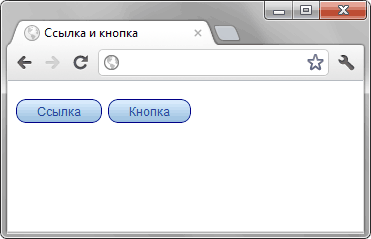

Кнопка или ссылка?
комментариев: 38
Влад Мержевич
Поддержка браузерами возможностей CSS3 и в связи с этим активное использование в веб-дизайне градиентов, теней и скруглений привело к тому, что стала размываться чёткая грань между встроенными элементами интерфейса и «нарисованными». На деле пользователю должно быть всё равно, что перед ним, ссылка или кнопка, пусть даже они выглядят абсолютно одинаково, ведь на то и другое можно щёлкнуть. В действительности же, неверное использование одного элемента взамен другого может привести к нарушению понимания логики сайта. Иными словами, посетителю сайта пользоваться им станет неудобно и некомфортно.
Давайте сделаем ссылку и кнопку, оформим их одинаково и посмотрим, чем же они различаются между собой кроме оформления. В примере 1 я вставил в код тег <a> и <button> и применил к ним стилевой класс design, при этом постарался убрать различия, чтобы эти два элемента выглядели похожими друг на друга как близнецы.
Пример 1. Оформление элементов
HTML5CSS3IECrOpSaFx
<!DOCTYPE html>
<html>
<head>
<meta charset="utf-8">
<title>Ссылка и кнопка</title>
<style>
.design {
display: inline-block; /* Строчно-блочный элемент */
padding: 5px 20px; /* Добавляем поля */
text-decoration: none; /* Убираем подчёркивание у ссылки */
cursor: pointer; /* Курсор в виде руки */
background: #deefff; /* Фон для браузеров, не поддерживающих градиент */
/* Градиент */
background: -moz-linear-gradient(top, #deefff 0%, #98bede 100%);
background: -webkit-gradient(linear, left top, left bottom, color-stop(0%,#deefff), color-stop(100%,#98bede));
background: -webkit-linear-gradient(top, #deefff 0%,#98bede 100%);
background: -o-linear-gradient(top, #deefff 0%,#98bede 100%);
background: -ms-linear-gradient(top, #deefff 0%,#98bede 100%);
background: linear-gradient(top, #deefff 0%,#98bede 100%);
border-radius: 10px; /* Скругляем уголки */
border: 1px solid #008; /* Добавляем синюю рамку */
font: 12px/1 Arial, sans-serif; /* Рубленый шрифт */
color: #2c539e; /* Цвет текста и ссылки */
}
</style>
</head>
<body>
<p><a href="1.html" class="design">Ссылка</a>
<button class="design">Кнопка</button>
</body>
</html>
Вот как это выглядит в браузере Chrome (рис. 1).

Рис. 1. Ссылка и кнопка, вид которых изменён через стили
Разницы на первый взгляд нет. Оба элемента одинаковы, при наведении на них курсора мыши он превращается в «руку». Можно щёлкать и ждать ответного гудка. Вот тут как раз и начинаются мелочи, в которых кроется дьявол. Систематизирую различия в мелочах.
Ссылка
Кнопка
Получается, что результат нажатия на кнопку непредсказуем, в отличие от ссылки. Здесь то мы точно знаем, что откроется новая страница. В случае с кнопкой может открыться новая страница или выполниться скрипт или вообще ничего не произойдёт. К тому же между кнопкой и ссылкой происходит путаница. Наша сверхстильная кнопка не очень похожа на саму себя, и чтобы показать, что на неё можно щёлкнуть, в стилях добавляется свойство cursor со значением pointer. Но это приводит к тому, что теперь кнопка воспринимается как ссылка и некоторые пользователи пытаются открыть такую кнопку в новой вкладке, а это, конечно, невыполнимо.
Что можно сделать для устранения этого противоречия. Вариантов несколько.
Текст с пунктиром показан на рис. 2. Для наглядности несколько увеличил размер шрифта.
Рис. 2. Кнопка с пунктирным подчёркиванием текста
Опять же, если при щелчке по кнопке открывается другая страница, пунктир не нужен, поскольку будет сбивать пользователей с толку. Так что способ 2 подходит только для скриптов, выполняющих какую-то работу в пределах одной страницы.